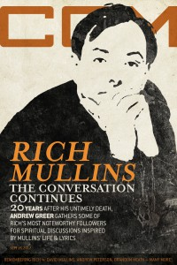

Rich MullinsOn the cover
15 September 2017
CCM Digital | Media coverage:- Jan 1986 in Contemporary Christian Magazine "Notebook: Songs of Another Kind", by Melinda Scruggs
- Apr 1987 in CCM "Notebook: Mullin' Things Over", by Robyn Frazer
- Jan 1988 in U "Scene & Heard: Rich Mullins", by Ross Pavlac
- Jan 1989 in Group "Top 40: Awesome God", by Stephen Parolini
- Feb 1990 in CCM "In Concert: U.S. Center For World Missions, Pasadena, CA", by David Geisler
- May 1990 in CCM "Hope To Carry On", by Thom Granger
- Aug 1991 in CCM "In Concert: Agape Fest, Greenville, IL", by Brian Quincy Newcomb
- Jan 1992 in Syndicate "Life as a Monk", by Kathleen A Ervin
- Jun 1992 in CCM "Step By Step: A Conversation With Rich Mullins", by Brian Quincy Newcomb
- Dec 1993 in CCM "A Ragamuffin's Oz", by Holly Halverson
- Feb 1994 in Campus Life "Expressions: Excuse Me, But Aren't You Rich Mullins?", by Jim Long
- Feb 1994 in Campus Life "Just The Facts: Rich Mullins", by Michael Long
- Jun 1994 in Christian Single "Profile: Combining Compassion and Charisma", by Beverly Burrow
- Aug 1994 in Syndicate "Spotlight: Among Ragamuffins", by Arsenio Orteza
- Oct 1994 in CCM "In Concert: Morris Hill Baptist Church, Chattanooga, TN", by Rhonda Miskowski
- Feb 1995 in CCM "Living Single"
- Apr 1995 in CCM "In Concert: Good Shepherd Church, Owensboro, KY", by Melanie Friebel
- Nov 1995 in CCM "O, to Be Rich", by Jim Long
- Dec 1995 in CCM "In Concert: New Life Church, Colorado Springs, CO", by Todd Hafer
- Sep 1996 in Living With Teenagers "Living the Paradox", by Mike Nappa, Amy Nappa
- Jul 1997 in CCM "Conversations: The Dreamer and the Saint", by Jim Long
- 1997 in Cornerstone "News Item: Christian Musician Rich Mullins Killed In Car Accident"
- 27 Oct 1997 in Christianity Today "Rich Mullins Killed In Crash"
- Nov 1997 in 7ball "blah, blah, blah: Rich Mullins", by Frank Chimento
- Nov 1997 in CCM "Requiem for a Ragamuffin", by April Hefner, Lindy Warren
- Nov 1997 in Charisma & Christian Life "Spotlight: Rich Mullins, 1955 - 1997", by Jimmy Stewart
- Nov 1997 in Charisma & Christian Life "Spotlight: Recalling Mullins As A Worshipper", by Lindy Warren
- Nov 1997 in CCM "As Best I Can Remember Him, Vol. 1", by Bernie Sheahan
- Nov 1997 in CCM "Rewind: A Prayer for Rich Mullins", by Devlin Donaldson
- Nov 1997 in CCM "Consider This: Barefoot In Heaven", by John Fischer
- Dec 1997 in Aspire "Rich Mullins"
- Jan 1998 in Group "Group Magazine Interview: Rich Mullins", by Mike Nappa
- May 1998 in CCM "Remembering Rich", by Dave Urbanski
- May 1998 in CCM "On The Beat: Rich Mullins & A Ragamuffin Band", by Lindy Warren
- Jul 1998 in CCM "The Day The Music Died", by Roberta Croteau
- Sep 1998 in CCM "On The Beat: Remembering a "Homeless Man"", by Lindy Warren
- Win 1998 in True Tunes News "The Jordan Waits No Longer", by John J. Thompson
- Dec 1998 in CCM Brasil "O que Rola: Lembrando um 'Desabrigado'", by Roberta Croteau
- Oct 1999 in CCM "On The Beat: Industry Joins to Honor Rich Mullins' Legacy", by Lindy Warren
- Dec 1999 in CCM Brasil "O que Rola: Indústria se Une Para Honrar o Legado do Rich Mullins", by Lindy Warren
- Jan 2000 in CCM "Nine Moments that Defined the 90s: Rich Mullins", by Steve Rabey
- Dec 2000 in CCM "On The Beat: Unraveling A Legacy", by Stephen Huba
- Aug 2001 in CCM "Music That Matters: Rich Mullins", by Seth Ebel
- Sep 2002 in CCM "Investing Wisely", by Ashley Cleveland
- May 2004 in CCM "Hall of Fame: Rich Mullins", by Michael Ciani
- Sep 2007 in CCM "Standing Stones: Icons Remembered"
- 15 Jan 2014 in CCM Digital "Musicians Corner: Story Behind the Song: Awesome God"
- 15 Sep 2017 in CCM Digital "Remembering Rich", by Andrew Greer
- 15 Sep 2017 in CCM Digital "To Be Loved, Not To Be Loved", by Andrew Greer
- 1 Oct 2017 in CCM Digital "Remembering Rich at the Ryman", by Mark D. Geil
- Sep 2023 in Sojourners "Vision / Music: Rich Mullins", by Mitchell Atencio
Albums & reviews:1987: Pictures in the Sky
1988: Winds of Heaven... Stuff of Earth
1989: Never Picture Perfect
1991: The World as Best as I Remember It, Volume 1
1992: The World as Best as I Remember It, Volume 2
1993: A Liturgy, a Legacy, and a Ragamuffin Band
1994: Pursuit of a Legacy
1997: Canticle of the Plains
1998: The Jesus Record
- Jun 1998 in Aspire
- Jun 1998 in CCM, by April Hefner
- 1998 in Cornerstone, by David Canfield
- Jul 1998 in CBA Marketplace, by Steve Parolini
- Aug 1998 in Charisma & Christian Life, by Doug Joseph
- Sep 1998 in YouthWorker, by Dave Urbanski
- Sep 1998 in New Man
- Sep 1998 in Today's Christian Woman
- Sep 1998 in Worship Leader, by Brian Casey
- Sep 1998 in CCM Brasil, by April Hefner
- Oct 1998 in Christian Single, by Mike Parker
- Nov 1998 in Moody, by Anita Lustrea
- Mar 1999 in Church Musician Today, by Shannon Dietor-Hartley
1998: Homeless Man - The Restless Heart of Rich Mullins [video]
1999: Songs 2
2014: Ragmuffin: The True Story of Rich Mullins
2023: Deep Valley
Award Summary (Nominations / Wins)
Dove Awards1990 Dove Awards1991 Dove Awards1993 Dove Awards- Song: "Sometimes By Step"
- Inspirational Recorded Song: "Sometimes By Step"
1994 Dove Awards1995 Dove Awards1996 Dove Awards1997 Dove Awards- Recorded Music Packaging: Songs
1998 Dove Awards1999 Dove Awards- Song: "My Deliverer"
- Songwriter
- Pop/Contemporary Album: The Jesus Record
- Recorded Music Packaging: The Jesus Record
2004 Dove Awards- Recorded Music Packaging: Here in America
Billboard Music Video AwardsBooks about Rich Mullins |